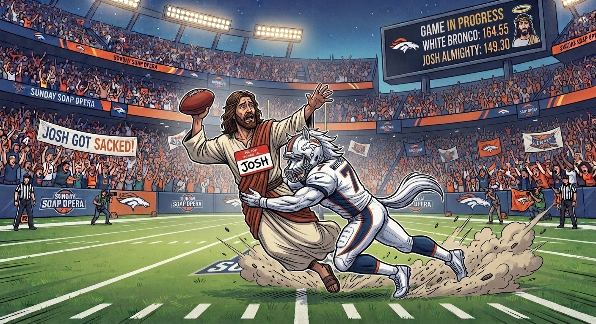

The Sunday Soap Opera Gazette
Whopper Wentzday Hangs 187, Then Gets Robbed Blind By Autobots in Achane Cartel Heist
Three weeks into the season, the divisional hierarchy in The Sunday Soap Opera is rapidly dividing the contender elite from the absolute clown shoes. While Whopper Wentzday dropped a nuclear 187.30 points to stay undefeated atop the West, the real bloodbath occurred on the trade block. A chaotic weekend of blockbusters saw draft picks fly in every direction, culminating in a tragic injury disaster and bribery rumors so severe that federal authorities might need to step in and investigate the Autobots front office.
Here is the full, unhinged investigative report on Week 3 action across the league, followed by the Week 4 matchup previews where we will absolutely jinx someone.
Week 3 Game Recaps
White Bronco 164.55, Josh Almighty 149.30
In the marquee heavyweight tilt of the week, White Bronco made a massive championship statement, out-gunning division rival Josh Almighty in a 164.55 to 149.30 shootout.
- White Bronco Key Performers: Brock Purdy (QB): 43.25 pts | Dak Prescott (QWRT): 20.70 pts | Drake London (WR): 20.40 pts
- Josh Almighty Key Performers: Trevor Lawrence (QWRT): 25.60 pts | Josh Allen (QB): 24.05 pts | Jonathan Taylor (RB): 15.41 pts

Brock Purdy put together an absolutely disgusting 43.25-point performance, shredding Josh Almighty's secondary and outdueling Josh Allen and Trevor Lawrence. Josh Almighty threw everything they had at the scoreboard, but White Bronco's lethal combination proved insurmountable. With the victory, White Bronco moves to 3-0 atop The Steeltown Junkies East, proving that their hot start is no fluke while handing Josh Almighty their first taste of defeat.
Whopper Wentzday 187.30, The Pain Train 124.70
Whopper Wentzday posted an absolute masterclass, hanging a week-high 187.30 points to obliterate The Pain Train in a 62.60-point bloodbath.
- Whopper Wentzday Key Performers: Sam Darnold (QWRT): 37.45 pts | Bijan Robinson (RB): 33.30 pts | Jaxon Smith-Njigba (WR): 25.50 pts
- The Pain Train Key Performers: Patrick Mahomes (QWRT): 21.40 pts | Markus Golden (WR): 16.00 pts | Kyler Murray (QB): 11.10 pts
Yes, you read that right. Sam Darnold—the guy who was seeing ghosts in New York—dropped 37.45 points to lead a fantasy team in the year of our Lord 2026. Supported by Bijan Robinson's casual 33.30-point effort, standing in front of Whopper's juggernaut felt like jumping in front of an actual locomotive. Whopper Wentzday remains undefeated at 3-0 with a league-pacing 514.15 total points forced, cementing their status as the apex predator of the Whopper Wentzday West.
RUN CMC 158.15, Kyler Duty 88.55
RUN CMC dominated Kyler Duty in a 69.60-point rout, cruising to a comfortable 2-1 record.
- RUN CMC Key Performers: Geno Smith (QB): 27.25 pts | Lamar Jackson (QWRT): 26.30 pts | James Cook III (RB): 18.40 pts
- Kyler Duty Key Performers: Matthew Stafford (QB): 23.80 pts | Cam Skattebo (RB): 10.00 pts | Baker Mayfield (QWRT): 0.00 pts
Geno Smith and Lamar Jackson combined for 53.55 points to spearhead RUN CMC's balanced attack. Meanwhile, Kyler Duty's week was doomed from the start after leaving an inactive Baker Mayfield in the QWRT slot for a grand total of 0.00 points. Classic Kyler Duty move. It's a miracle they remembered their password this week. Kyler Duty drops to 1-2.
Marr Burrow Smokes 136.25, Autobots 113.85
Marr Burrow Smokes got back in the win column with a 22.40-point victory over the spectacularly incompetent Autobots.
- Marr Burrow Smokes Key Performers: Joe Burrow (QWRT): 29.40 pts | Texans Defense (DEF): 18.00 pts | Terry McLaurin (WR): 13.70 pts
- Autobots Key Performers: Marcus Mariota (QB): 26.25 pts | Bo Nix (QWRT): 24.00 pts | Aaron Rodgers (BN): 28.60 pts
Joe Burrow bounced back in style with 29.40 points to push Marr Burrow Smokes to 2-1. On the other sideline, Autobots dropped to 0-3 in painful, hilarious fashion—watching Aaron Rodgers drop 28.60 points on their bench while starting Marcus Mariota and Bo Nix. Handing the wheel to the autodraft algorithm continues to produce pure comedy for rival managers as Autobots sits buried in the cellar.
Danger Cats 129.15, Steeltown Junkies 102.25
Danger Cats used an explosive running game to handle defending champion Steeltown Junkies.
- Danger Cats Key Performers: Jahmyr Gibbs (RB): 34.40 pts | Christian Watson (WR): 15.60 pts | Tee Higgins (WR): 15.00 pts
- Steeltown Junkies Key Performers: Kirk Cousins (QWRT): 27.70 pts | George Kittle (TE): 20.20 pts | Drake Maye (QB): 0.75 pts
Jahmyr Gibbs put Danger Cats on his back with an electric 34.40-point performance. Steeltown Junkies received strong efforts from Kirk Cousins and George Kittle, but a disastrous 0.75-point outing from starting QB Drake Maye sank their hopes. The championship hangover is terminal, folks. Steeltown Junkies drops below the postseason cutoff line at 1-2, leaving fans wondering if they're just going to punt the season entirely.
Clench Tuxedos 124.35, Three Dots an a Dash 101.75
Clench Tuxedos finally stopped embarrassing themselves, earning their first victory of the season by holding off winless Three Dots an a Dash.
- Clench Tuxedos Key Performers: Tyler Shough (QWRT): 29.35 pts | Jordan Love (QB): 23.60 pts | Kenneth Walker III (RB): 19.30 pts
- Three Dots Key Performers: Broncos Defense (DEF): 20.00 pts | Hunter Fannin Jr. (TE): 17.10 pts | Daniel Jones (QB): 5.25 pts
Co-managers Dan & Nate finally got Clench Tuxedos moving in the right direction behind 29.35 points from Tyler Shough. Three Dots an a Dash suffered from a 5.25-point collapse at starting QB from Daniel Jones and dropped to 0-3 at the bottom of The Steeltown Junkies East. Time to pay up on that case of beer, fellas.
Special Investigative Report: Week 3 Trade Blockbusters & Bribery Scandals
Trade 1: CeeDee Lamb Blockbuster
White Bronco Receives: CeeDee Lamb (WR), 12th, 14th, 16th Rd Picks
Autobots Receives: Alec Pierce (WR), 1st, 2nd, 7th Rd Picks (White Bronco)
White Bronco: A- Autobots: B+
White Bronco made it crystal clear they are playing for the championship ring right now. Adding an elite, game-breaking talent in CeeDee Lamb gives them unstoppable receiving production. Sure, giving up next year's 1st and 2nd round picks hurts, but flags fly forever. Meanwhile, Autobots continues their full rebuild, hoarding draft equity like a doomsday prepper waiting for the apocalypse.
Trade 2: The Achane Tragedy & The Fleecing of Whopper Wentzday
Whopper Wentzday Receives: De'Von Achane (RB), Josh Downs (WR), 13th & 15th Rd Picks
Autobots Receives: Rashid Shaheed (WR), Chuba Hubbard (RB), 3rd & 4th Rd Picks
Whopper Wentzday: V (Victim) Autobots: P (Predator)
When the transaction processed on Saturday, Whopper Wentzday executed a classic win-now move, surrendering starting depth and valuable 3rd and 4th round draft picks to acquire a marquee backfield weapon in De'Von Achane. However, disaster struck less than 24 hours later. During Miami’s matchup against Kansas City, Achane exited in the first quarter with a complete ACL tear. MRI scans confirmed a 9 to 12 month recovery timeline, placing Whopper's headline acquisition on Season-Ending IR before ever starting a single game for his new franchise.
The timing is far too surgical. Unsubstantiated whispers have surfaced claiming Kansas City safety Alohi Gilman received a gracious "financial tip" courtesy of Autobots management right before delivering that low tackle—a rumor Autobots leadership vehemently denies. When approached by The Gazette regarding the allegations, Autobots maintained that "it was just bad luck," before shutting down further questions with a defensive "NO COMMENT!" On the other end, a visibly shell-shocked Whopper Wentzday offered a succinct, weeping summary: "Can't believe that. Fuck."
Trade 3: Amon-Ra St. Brown Blockbuster
Clench Tuxedos Receives: Amon-Ra St. Brown (WR), 10th, 15th, 16th Rd Picks
Steeltown Junkies Receives: George Kittle (TE), 1st, 2nd, 8th Rd Picks
Clench Tuxedos: B+ Steeltown Junkies: A-
Clench Tuxedos gave up the absolute farm to bring in "Sun God" Amon-Ra St. Brown, instantly bolstering their starting lineup to try and save their season. Steeltown Junkies capitalized on their title leverage, acquiring George Kittle at tight end while re-stocking their completely depleted top-five draft round inventory for next spring.
Trade 4: Metcalf & Pittman Blockbuster
Marr Burrow Smokes Receives: Parker Washington (WR), Zay Flowers (WR), 10th & 11th Rd Picks
Three Dots an a Dash Receives: DK Metcalf (WR), Michael Pittman Jr. (WR), 1st & 5th Rd Picks
Marr Burrow Smokes: B Three Dots an a Dash: A
Three Dots an a Dash pulled off an absolute fleece job to try and rescue their miserable 0-3 season, grabbing two starting WRs in DK Metcalf and Michael Pittman Jr. alongside a 1st round pick. Marr Burrow Smokes depth-charges their roster with Zay Flowers while presumably taking crazy pills.
Week 4 Matchup Previews & Gazette Picks
RUN CMC (2-1) vs. Autobots (0-3)
Projection: RUN CMC 122.85, Autobots 116.46
Gazette Pick: RUN CMC 🔮
Lamar Jackson (23.08 proj) and Geno Smith give RUN CMC a massive edge at quarterback. Winless Autobots are dead meat. Unless they pay off another defender, they'll drop to 0-4.
Kyler Duty (1-2) vs. The Pain Train (1-2)
Projection: The Pain Train 128.86, Kyler Duty 101.37
Gazette Pick: The Pain Train 🔮
With Baker Mayfield projected at 0.00 points for Kyler Duty because setting a lineup is apparently too hard, Pain Train behind Kyler Murray and Patrick Mahomes will cruise to victory.
Marr Burrow Smokes (2-1) vs. Whopper Wentzday (3-0)
Projection: Whopper Wentzday 136.47, Marr Burrow Smokes 129.46
Gazette Pick: Marr Burrow Smokes (UPSET SPECIAL) 🔮
Whopper Wentzday is mourning the Achane disaster and Mike Evans is hobbled. Joe Burrow pulls off the upset for Marr Burrow Smokes while Whopper cries in the corner.
Josh Almighty (2-1) vs. Steeltown Junkies (1-2)
Projection: Josh Almighty 141.95, Steeltown Junkies 106.26
Gazette Pick: Josh Almighty 🔮
Josh Allen (24.05 proj) and Trevor Lawrence lead an overwhelming offense that the defending champ Steeltown Junkies simply cannot match this week.
Danger Cats (2-1) vs. Three Dots an a Dash (0-3)
Projection: Danger Cats 126.95, Three Dots an a Dash 113.17
Gazette Pick: Danger Cats 🔮
Jahmyr Gibbs and Jalen Hurts keep Danger Cats rolling while Three Dots navigates their new trade additions and tries to remember how to win a football game.
White Bronco (3-0) vs. Clench Tuxedos (1-2)
Projection: White Bronco 131.88, Clench Tuxedos 124.25
Gazette Pick: White Bronco 🔮
In the matchup of the week, Brock Purdy and newly acquired CeeDee Lamb narrowly outpower Amon-Ra St. Brown to keep Bronco undefeated at 4-0.
The Steeltown Junkies East
- White Bronco 3-0-0 (467.15 PF)
- Josh Almighty 2-1-0 (536.00 PF)
- Danger Cats 2-1-0 (423.75 PF)
- Clench Tuxedos 1-2-0 (391.05 PF)
- Three Dots an a Dash 0-3-0 (374.85 PF)
- Steeltown Junkies 1-2-0 (328.40 PF)
Whopper Wentzday West
- Whopper Wentzday 3-0-0 (514.15 PF)
- RUN CMC 2-1-0 (397.30 PF)
- The Pain Train 1-2-0 (397.75 PF)
- Marr Burrow Smokes 2-1-0 (321.65 PF)
- Autobots 0-3-0 (314.50 PF)
- Kyler Duty 1-2-0 (272.65 PF)